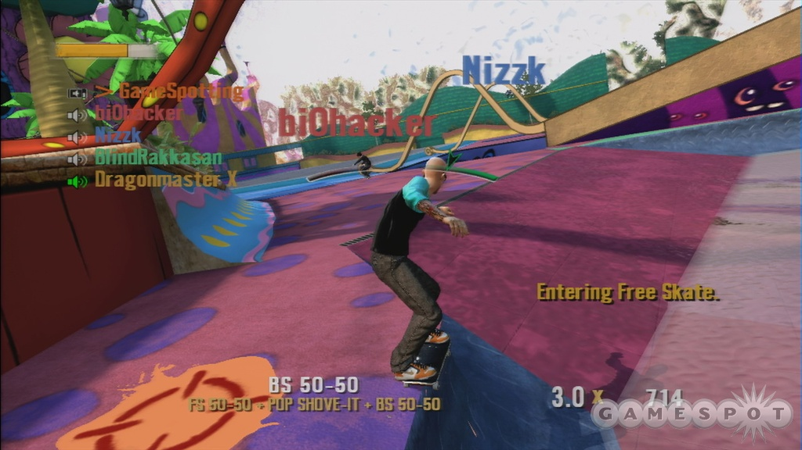
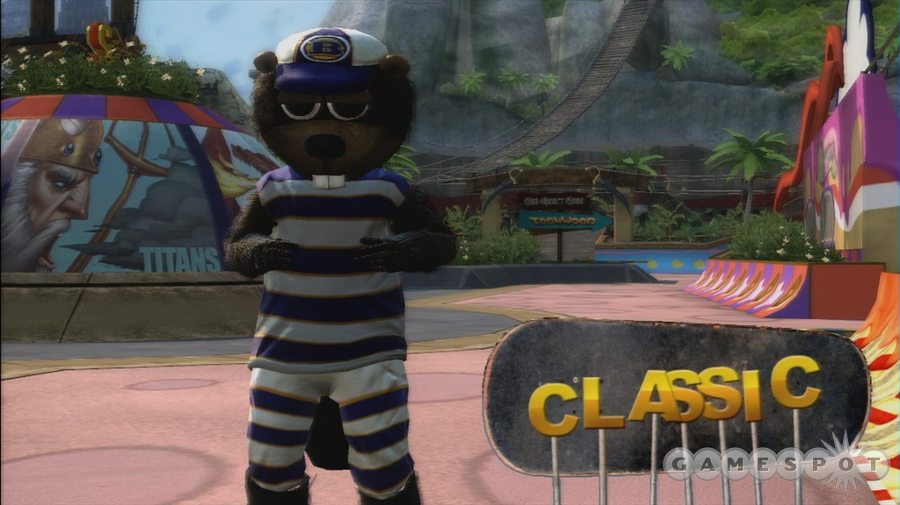
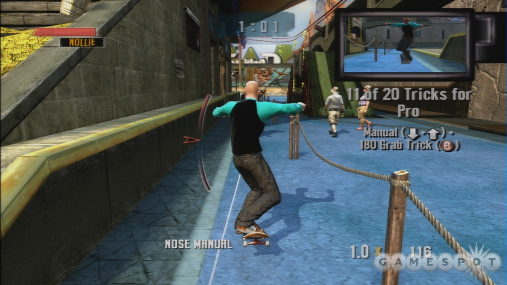
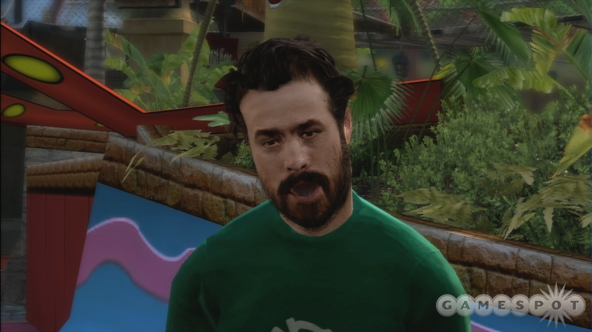

| main page | game reviews | editorials | features | video | podcast | forums | search |
| Tony Hawk's Project 8 is the first Tony Hawk game to be developed from the ground up for the Xbox 360. In addition to a massive open world where you can skate anywhere load time-free, players can access a new mode called "Nail-the-Trick," where time slows, the camera zooms in on your board, and you can use the analog sticks to control your feet and pull of tricks. |
review
|
► Tony Hawk appeared on the Xbox 360 last year, but Tony Hawk's Project 8
marks the first time that the series has been built from the ground up
for the current generation of consoles. As you might expect, not being
saddled with the constraints of the Xbox and PlayStation 2, Activision
and Neversoft have made some strong visual strides this year, updating
and modernizing the game's look while replacing a lot of the trick
animations that had been in place for years. The gameplay is as
freeform and as technical as it's ever been, with some smart changes on
that front that are enough to keep fans of the series interested, while
a new tutorial is aimed at getting new players up to speed.
Unfortunately, some technical glitches and unstable frame rates plague
both the Xbox 360 and the PlayStation 3 version of the game.
Those frame-rate problems hit the PlayStation 3 version of the game significantly harder than the Xbox 360. Other than the choppy frame rate and slightly sharper graphics on the PlayStation 3, some of which is only noticeable when using an HDMI cable on a high-end HDTV, the games look roughly the same. But there are other, more significant differences between the two versions. The Xbox 360 version has online support for up to eight players, including a new game mode called walls, which gives your skater a tall trail behind him that behaves sort of like the light cycles in Tron--if you hit another player's wall, you're out. The Xbox 360 version also uses its online support to present a lot of different online leaderboards. Much like Amped 3, many of the different goals in the game have their own individual leaderboard, which adds some competition to the single-player game and gives you a reason to keep on playing the same goals again and again. Without this, the PS3 version feels sort of flat by comparison. The PlayStation 3 version of the game distinguishes itself by offering complete support for the Sixaxis controller's motion-sensing abilities. You can set it to just control functions like balancing, if you like, or you can move and execute tricks with it, as well. It works, but it lacks the precision offered by the D pad, so it's a neat experiment that's pretty good at showing off what the Sixaxis is capable of, but you probably wouldn't want to play through the game this way. The PlayStation 3 version also installs a 264MB cache file onto the system's hard drive when you first put the game in your system. Presumably, this is done to help speed up loading, but the load times don't seem much better than the Xbox 360 version of the game. If you're in a position where you have to choose between the two versions of the game, the Xbox 360 version offers a more complete package. The Tony Hawk series was a pioneer when it came to being online on the PlayStation 2, and its omission on the PS3 is completely crazy and thoroughly disappointing. |
review author: gakon
what's good:
� Redesigned career mode gives you multiple levels of challenge � Nail the trick mode is a cool-looking addition that has a positive impact on the gameplay � Online scoreboards add more lasting challenge to the career mode what isn't: � Frame rate is frequently unstable � Skater creation options aren't as in-depth as they have been in previous installments |
screenshots
Click screenshot to enlarge:   